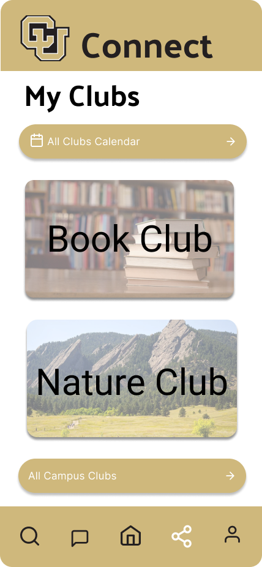
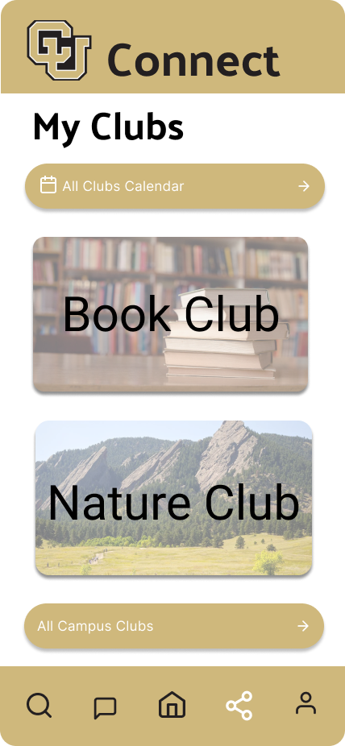

Description: CU Connect is an app that enables college students to easily connect with classmates directly. This app aims to encourage and assist students in making new connections and in growing their social network while in college and throughout the rest of their career.
Target Audience: Current college students
Timeline: 2 Months
Role: Co-led entire design process from empathize to test to final product
Software: Figma
The overall wellbeing and mental health of college students is steadily declining to record lows. Rates of stress, anxiety and depression are high among university students. As our society becomes more dependent and attached to technology, social interactions become less frequent and many report feelings of isolation and loneliness. Following the 2020 pandemic, the ability to have interactions was next to impossible making the mental health crisis even worse. After the state of emergency was lifted, the idea of having conversations and being confident enough to meet new people brought uncertainty and additional stress. Since sharing ideas, collaborating and problem solving in groups has proven to be effective ingredients for a successful college career, this problem needs to be addressed.
Our app alleviates negative thoughts and feelings of doubt brought up when meeting new people by providing students the means to plant a conversational seed with fellow classmates through a direct messaging platform. In this platform, students have the ability to form group messages for increased collaboration and support. As an addition, information about campus clubs and events is included to increase involvement and opportunities for students to create new connections.
In addition to reflecting and documenting our own thoughts and actions about social connectedness as we were current college students during this project, we conducted interviews with 4 other current college students on the University of Colorado Boulder campus.
The interview consisted of 10 total questions:
We took detailed responses and organized the data into an affinity diagram:

Insights:
After conducting the interviews, we were able to formulate the main pain points in the social life of a college student.
We were also able to conclude what students would like to see and what they would expect from a college specific social platform.

Added type search option to messages:
Added group message feature:
Added save button & feedback that the information was saved:

Added visual feedback by including the text “Delivered” bellow the sent message:
Added reminders to the home page:

 

This was my first end to end UX/UI project. It was challenging at times but very rewarding in the end as I learned a lot from the process. Since I came in with solid time management and problem solving skills as an engineer, I was able to excel as a beginner where others struggled.
Main learning points: